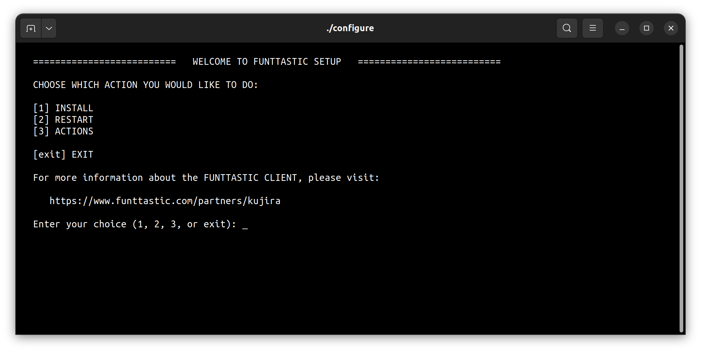

It's very recommended to watch this video from the Hummingbot Foundation and their installation guide:

Install Git to be able to clone the repository:
sudo apt install git
sudo dnf install git
sudo yum install git
brew install git
Open the shell terminal, use the "cd" command to navigate to the folder where you want to clone the repository and run the command below:
git clone https://github.com/funttastic/kujira-quickstart-guide.git
Open the repository folder with the command below:
cd kujira-quickstart-guide
Using the command below, start the script that will help you perform the installation:
./configure
When you run the script, you will see the main menu screen as shown below:
You can access our playlist explaining how to configure several aspects for the bot:
More tutorial videosOpen the following configuration file:
shared/funttastic/client/resources/configuration/production.yml
You are enabling telegram, we recommend changing to `true` the following:
logging.use_telegram telegram.enabled telegram.listen_commands
Add your telegram token to:
telegram.token
and your telegram channel chat id to:
telegram.chat_id
In order to add funds to your wallet, you can use a faucet inside the Kujira Discord.
To join their discord you can use this link:
https://discord.gg/teamkujiraAfter joining and doing their verification process, you can look for this channel:
#public-testnet-faucet
Or try this link:
https://discord.com/channels/970650215801569330/1009931570263629854Then you can use the following command there:
!faucet <change to your Kujira wallet address here>
If you need more info you can contact us here:
https://funttastic.com/discord